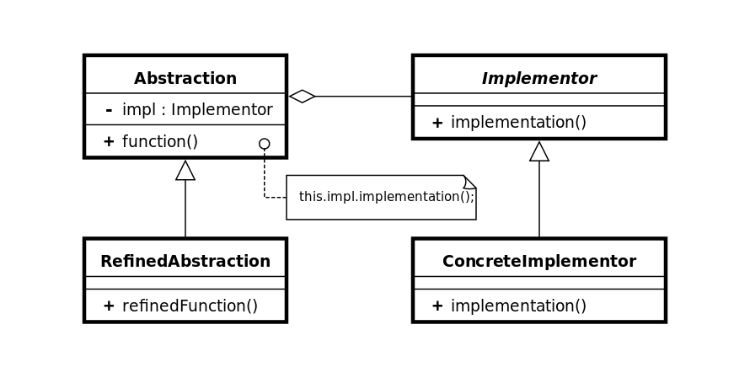
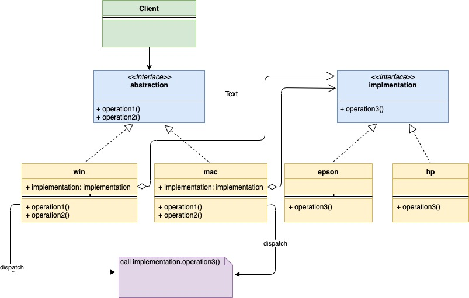
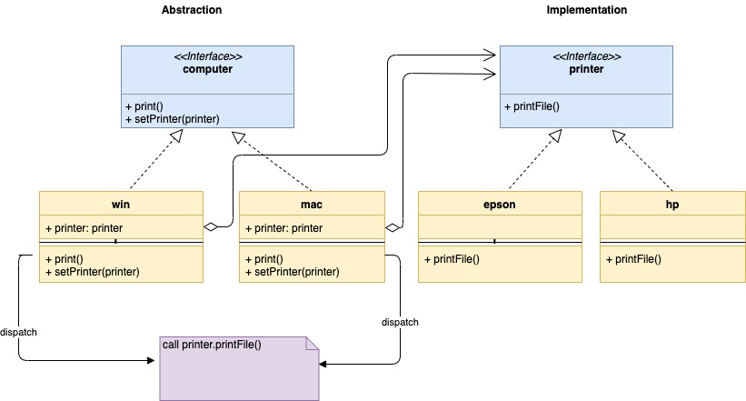

Bridge Pattern
출처: https://golangbyexample.com/bridge-design-pattern-in-go/
개요
구현부에서 추상층을 분리하여 각자 독립적으로 변형할 수 있게 하는 패턴이다. 이 패턴은 큰 클래스를 두개의 개별 계층으로 나누는것을 제안한다.
- Abstraction: interface. Implementation에 대한 참조가 포함됨.
Abstraction의 자식을 Refined Abstraction 이라고 부름. - Implementation: interface.
Implementation의 자식을 Concrete Implementation 이라고 부름.

UML 다이어그램
2가지 유형의 컴퓨터 Mac과 Windows가 있다고 가정. 2가지 유형의 프린터 epson과 hp가 있다고 가정. 2*2의 조합의 4개의 구조체를 만드는 대신 2개의 계층을 만든다.


코드
computer.go
package main
type computer interface {
print()
setPrinter(printer)
}
mac.go
package main
import "fmt"
type mac struct {
printer printer
}
func (m *mac) print() {
fmt.Println("Print request for mac")
m.printer.printFile()
}
func (m *mac) setPrinter(p printer) {
m.printer = p
}
windows.go
package main
import "fmt"
type windows struct {
printer printer
}
func (w *windows) print() {
fmt.Println("Print request for windows")
w.printer.printFile()
}
func (w *windows) setPrinter(p printer) {
w.printer = p
}
printer.go
package main
type printer interface {
printFile()
}
epson.go
package main
import "fmt"
type epson struct {
}
func (p *epson) printFile() {
fmt.Println("Printing by a EPSON Printer")
}
hp.go
package main
import "fmt"
type hp struct {
}
func (p *hp) printFile() {
fmt.Println("Printing by a HP Printer")
}
main.go
package main
import "fmt"
func main() {
hpPrinter := &hp{}
epsonPrinter := &epson{}
macComputer := &mac{}
macComputer.setPrinter(hpPrinter)
macComputer.print()
fmt.Println()
macComputer.setPrinter(epsonPrinter)
macComputer.print()
fmt.Println()
winComputer := &windows{}
winComputer.setPrinter(hpPrinter)
winComputer.print()
fmt.Println()
winComputer.setPrinter(epsonPrinter)
winComputer.print()
fmt.Println()
}
실행 결과
Print request for mac
Printing by a HP Printer
Print request for mac
Printing by a EPSON Printer
Print request for windows
Printing by a HP Printer
Print request for windows
Printing by a EPSON Printer